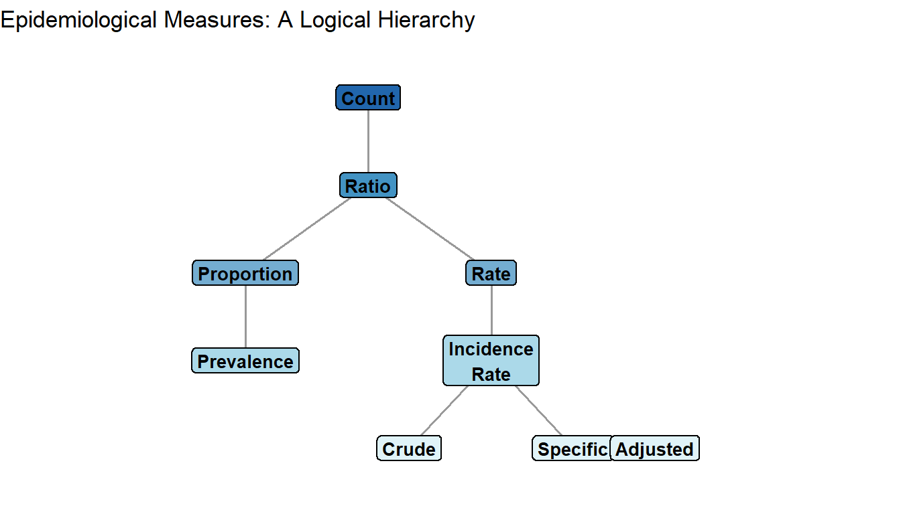
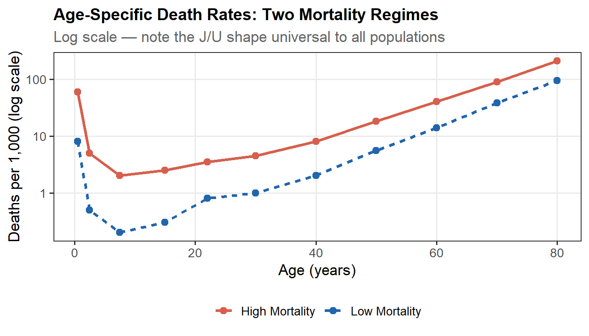
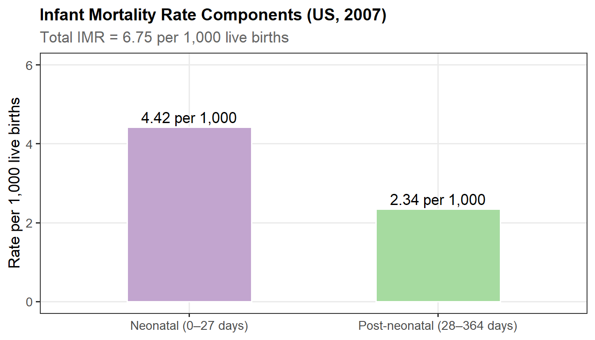
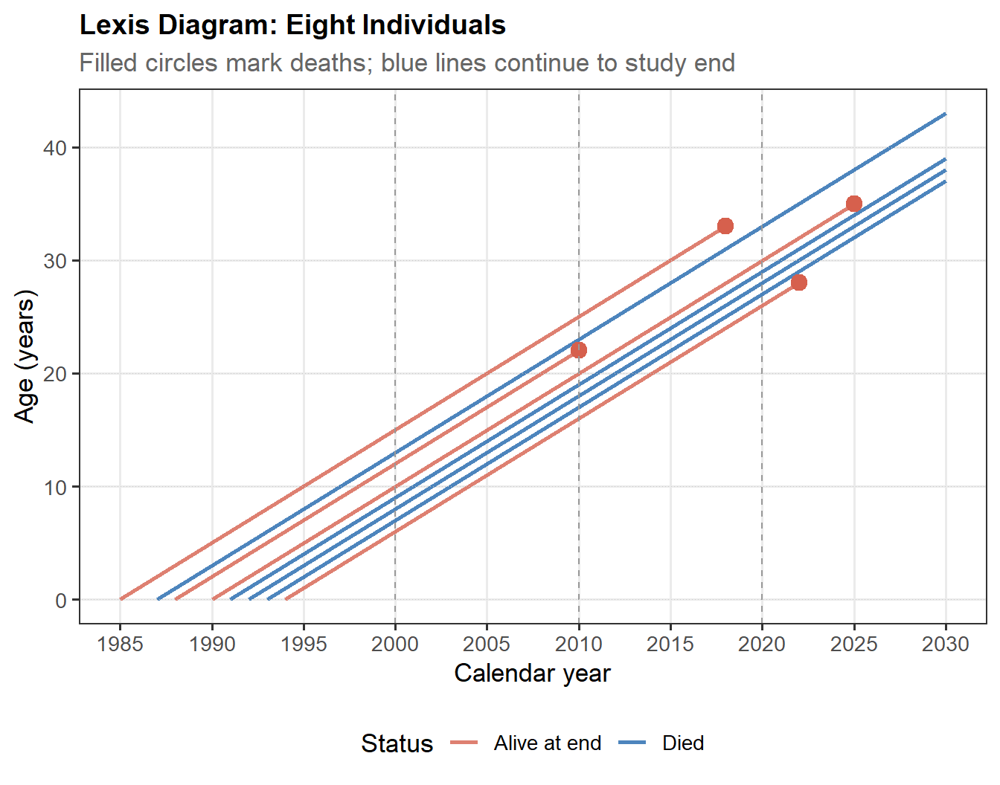
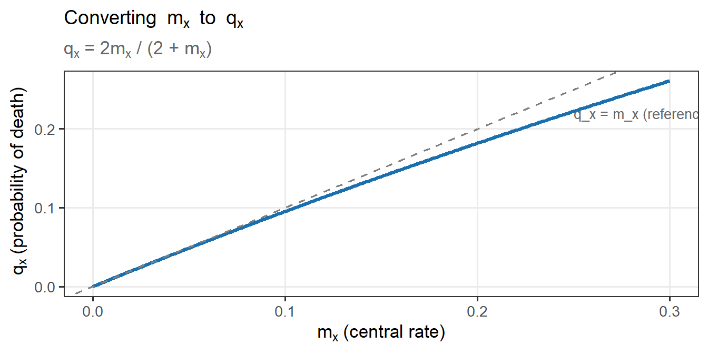
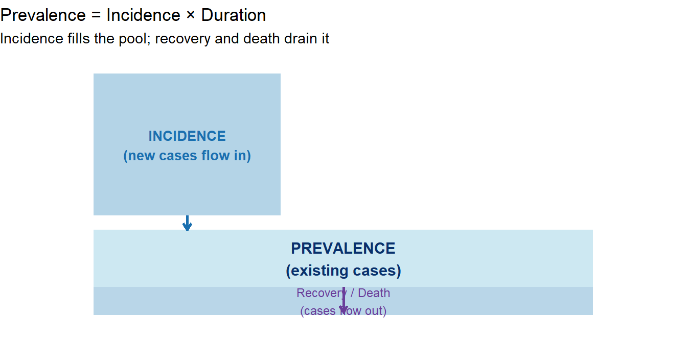

1 Unit 1: Measures of Mortality and Morbidity
Foundations of Demographic and Epidemiological Analysis
2 Introduction
Survival analysis begins not with equations but with data — with counts of people dying, organisms failing, crops succumbing to disease, or patients recovering. Before any formal statistical model can be applied, we need a precise vocabulary for describing how many, how fast, and among whom these events occur. That vocabulary is built from the measures of mortality and morbidity introduced in this unit.
Mortality and morbidity measurement has a history stretching back to John Graunt’s Natural and Political Observations upon the Bills of Mortality (1662), the first systematic demographic analysis of death records. The measures Graunt pioneered — counts, proportions, and rates — remain the empirical foundation of every life table, actuarial calculation, and clinical trial protocol in use today.
This unit covers:
- The conceptual distinction between mortality and morbidity
- Data sources used in mortality and morbidity analysis
- The hierarchy of epidemiological measures: counts, ratios, proportions, and rates
- All major mortality measures with formulae, interpretations, and worked examples
- The Lexis diagram as a tool for representing demographic time
- Period rates versus cohort rates
- Rate standardisation: direct and indirect methods
- Key measures of morbidity: incidence, prevalence, attack rate, and case fatality rate
- Measures of association: relative risk and odds ratio
3 Concept of Mortality and Morbidity
3.1 Mortality
Mortality is defined as the demographic event of death — the permanent departure of an individual from the living population. Because death occurs at most once per individual, mortality analysis is conceptually simpler than fertility analysis (where a birth can occur multiple times to the same woman).
Mortality analysis begins with good-quality data on deaths and on the population exposed to the risk of dying. These data come from:
- Vital registration systems (Civil Registration System, CRS)
- Sample Registration System (SRS — a dual-record system providing national and state-level estimates)
- Population censuses and sample surveys (NSSO, Annual Health Survey)
The risk of dying is not uniform: it is high in infancy, falls sharply in childhood, reaches a minimum near age 10, then rises progressively — steeply after age 50. This characteristic pattern, shaped like a reverse J-curve, is universal across all human populations, though the level at each age varies with the health environment.
3.2 Morbidity
Morbidity refers to the state of illness or disease in a population — the condition of health rather than the event of death. Morbidity and mortality are interlinked: morbidity may lead to death, but not all deaths are preceded by a recognised morbid episode.
According to the WHO (1946), health is a state of complete physical, mental, and social well-being — not merely the absence of disease. Deviations from this state constitute morbidity.
The National Sample Survey Organisation (NSSO) defines an ailment (illness or injury) as any deviation from the state of physical and mental well-being during a reference period, including:
- Diseases (communicable and non-communicable)
- Injuries (cuts, fractures, burns, bites)
- Disabilities (visual, hearing, locomotor, mental)
4 Data Sources for Mortality and Morbidity Analysis
Reliable mortality and morbidity analysis depends on the quality of underlying data. The principal sources in India (and analogously elsewhere) are:
Sample Registration System (SRS): A dual-record system combining continuous enumeration with periodic retrospective surveys. Provides annual estimates of birth and death rates at the national and state level. Considered the most reliable source of vital statistics in India.
Civil Registration System (CRS): Legal registration of births, deaths, and marriages. Provides district-level coverage but data quality varies across states; several states report significant under-registration.
Annual Health Survey (AHS): Conducted in high-fertility states (the BIMARU group — Bihar, Madhya Pradesh, Rajasthan, Uttar Pradesh — plus Assam, Chhattisgarh, Jharkhand, Odisha, and Uttarakhand). Covers over 4 million households per round and provides district-level mortality indicators including neonatal, infant, and under-5 mortality.
Population Census: Provides age-sex distributions essential for computing age-specific rates. Also collects disability data.
NSSO Surveys: Morbidity and healthcare rounds provide data on ailment rates (illness in the last 15 days and last year) and hospitalisation rates.
5 The Hierarchy of Epidemiological Measures
All epidemiological measures belong to one of four categories. Understanding their logical relationships prevents common misuses.
5.1 Count
The simplest measure: the raw number of events (deaths, cases, births) in a population during a time period. Counts are useful for resource allocation but tell us nothing about the size of the underlying population.
Example: 29,153 infant deaths in the United States in 2007.
5.2 Ratio
A ratio is any quotient \(X / Y\) where \(X\) and \(Y\) need not be related subsets. Ratios express one quantity relative to another.
\[\text{Ratio} = \frac{X}{Y}\]
Example: Sex ratio = (number of males / number of females) × 100. In the United States (2010): \((151{,}781{,}326 / 156{,}964{,}212) \times 100 = 96.7\), indicating more females than males.
The sex ratio at birth is defined as:
\[\text{Sex ratio at birth} = \frac{\text{Number of male births}}{\text{Number of female births}} \times 1000\]
5.3 Proportion
A proportion is a ratio where the numerator is a subset of the denominator. Proportions lie in \([0,1]\) and may be expressed as percentages.
\[\text{Proportion} = \frac{A}{A + B}\]
Example: If 1,150 deaths occurred among African-American boys and 3,810 among white boys (ages 5–14), the proportion of deaths accounted for by African-American boys is \((1150/4960) \times 100 = 23.2\%\).
5.4 Rate
A rate is a special ratio in which:
- The numerator = frequency of events during a specified time period
- The denominator = the population at risk of experiencing those events during the same period
- A multiplier (10, 100, 1,000, or 100,000) makes the rate interpretable as an integer
\[\text{Rate} = \frac{\text{Number of events in period}}{\text{Population at risk in period}} \times k\]
Rates enable comparisons across populations of different sizes. They are the workhorse of epidemiology and demography.
6 Mortality Measures
The table below summarises all major mortality measures with their formulae and multipliers before we examine each in detail.
| Measure | Numerator | Denominator | Multiplier |
|---|---|---|---|
| Crude Death Rate (CDR) | Total deaths during year | Mid-year population | 1,000 |
| Age-Specific Death Rate (ASDR) | Deaths in age group [x, x+n) | Mid-year population, same age group | 1,000 |
| Cause-Specific Death Rate (CSDR) | Deaths from specific cause | Mid-year total population | 100,000 |
| Proportional Mortality Ratio (PMR) | Deaths from specific cause | Deaths from all causes | % |
| Crude Birth Rate (CBR) | Live births during year | Mid-year population | 1,000 |
| General Fertility Rate (GFR) | Live births during year | Mid-year women aged 15–44 | 1,000 |
| Infant Mortality Rate (IMR) | Deaths < 1 year of age | Live births during year | 1,000 |
| Neonatal Mortality Rate (NMR) | Deaths < 28 days of age | Live births during year | 1,000 |
| Post-neonatal Mortality Rate (PNMR) | Deaths 28–364 days of age | Live births − neonatal deaths | 1,000 |
| Perinatal Mortality Rate | Late fetal deaths (≥28 wk) + infant deaths within 7 days | Live births + late fetal deaths | 1,000 |
| Maternal Mortality Rate (MMR) | Deaths from pregnancy-related causes | Live births during year | 100,000 |
| Child Mortality Rate (CMR) | Deaths of children 1–4 years | Population 0–4 years of age | 1,000 |
6.1 Crude Death Rate (CDR)
The Crude Death Rate is the simplest and most widely reported measure of overall mortality. It gives the number of deaths per 1,000 mid-year population during a calendar year.
\[\boxed{\text{CDR} = \frac{D}{P} \times 1000}\]
where \(D\) = total deaths during the year, and \(P\) = mid-year population.
Strengths: Simple to compute; requires only total deaths and population.
Limitations: “Crude” means no adjustment for the age-sex composition of the population. Two populations can have very different age structures yet similar CDRs (or vice versa). A population with a higher proportion of elderly will have a higher CDR purely because of its age structure, not because mortality at any given age is worse.
Code
cdr_df <- data.frame(
Country = c("Country A (young)", "Country B (old)"),
Deaths = c(50000, 90000),
MidYrPop = c(10e6, 10e6)
) |>
mutate(CDR = round(Deaths / MidYrPop * 1000, 1))
kbl(cdr_df,
col.names = c("Population","Deaths","Mid-year Pop.","CDR (per 1,000)"),
align = "lrrr",
format.args = list(big.mark = ",")) |>
kable_styling(bootstrap_options = c("striped","hover"),
full_width = FALSE, position = "center") |>
footnote(general = "Both populations have the same size. Country B's higher CDR
may simply reflect an older age structure, not worse health at any given age.")| Population | Deaths | Mid-year Pop. | CDR (per 1,000) |
|---|---|---|---|
| Country A (young) | 50,000 | 1e+07 | 5 |
| Country B (old) | 90,000 | 1e+07 | 9 |
| Note: | |||
| Both populations have the same size. Country B's higher CDR may simply reflect an older age structure, not worse health at any given age. |
6.2 Age-Specific Death Rate (ASDR)
The ASDR controls for age by computing the death rate within each age stratum:
\[\boxed{\text{ASDR}_{[x,x+n)} = \frac{{}_{n}D_x}{{}_{n}P_x} \times 1000}\]
where \({}_{n}D_x\) = deaths between exact ages \(x\) and \(x+n\), and \({}_{n}P_x\) = mid-year population in that age group.
The universal pattern of age-specific mortality (for any human population):
- Infancy: very high — the neonatal hazard
- Ages 1–10: rapid decline to a minimum
- Adolescence/early adulthood: slight rise (accidents, violence)
- Middle age onwards: steady exponential increase
- Old age (>50): steep acceleration
In high-mortality settings, the ASDRs form a U-shaped curve (high at both extremes). In low-mortality settings, the shape is more J-shaped (dominant elevation only in infancy and old age).
Code
age_mid <- c(0.5, 2.5, 7.5, 15, 22, 30, 40, 50, 60, 70, 80)
asdr_lo <- c(8, 0.5, 0.2, 0.3, 0.8, 1.0, 2.0, 5.5, 14, 38, 95) # low mortality
asdr_hi <- c(60, 5.0, 2.0, 2.5, 3.5, 4.5, 8.0, 18, 40, 90, 210) # high mortality
df_asdr <- data.frame(
age = rep(age_mid, 2),
asdr = c(asdr_lo, asdr_hi),
Setting = rep(c("Low Mortality","High Mortality"), each = length(age_mid))
)
ggplot(df_asdr, aes(x = age, y = asdr, colour = Setting, linetype = Setting)) +
geom_line(linewidth = 1.2) +
geom_point(size = 2.5) +
scale_y_log10(labels = label_comma()) +
scale_colour_manual(values = c("Low Mortality" = "#2166ac",
"High Mortality" = "#d6604d")) +
labs(title = "Age-Specific Death Rates: Two Mortality Regimes",
subtitle = "Log scale — note the J/U shape universal to all populations",
x = "Age (years)", y = "Deaths per 1,000 (log scale)",
colour = NULL, linetype = NULL) +
theme(legend.position = "bottom")
Code
us2003 <- data.frame(
Age_Group = c("<1","1–4","5–14","15–24","25–34","35–44",
"45–54","55–64","65–74","75–84","85+"),
Deaths = c(28025,4965,6954,33568,41300,89461,
176781,262519,413497,703024,687852),
Population = c(4003606,15765673,40968637,41206163,39872598,44370594,
40804599,27899736,18337044,12868672,4713467)
) |>
mutate(ASDR = round(Deaths / Population * 100000, 1))
kbl(us2003,
col.names = c("Age Group","Deaths","Population","ASDR (per 100,000)"),
align = "lrrr",
format.args = list(big.mark = ",")) |>
kable_styling(bootstrap_options = c("striped","hover","condensed"),
full_width = FALSE, position = "center") |>
row_spec(0, bold = TRUE)| Age Group | Deaths | Population | ASDR (per 100,000) |
|---|---|---|---|
| <1 | 28,025 | 4,003,606 | 700.0 |
| 1–4 | 4,965 | 15,765,673 | 31.5 |
| 5–14 | 6,954 | 40,968,637 | 17.0 |
| 15–24 | 33,568 | 41,206,163 | 81.5 |
| 25–34 | 41,300 | 39,872,598 | 103.6 |
| 35–44 | 89,461 | 44,370,594 | 201.6 |
| 45–54 | 176,781 | 40,804,599 | 433.2 |
| 55–64 | 262,519 | 27,899,736 | 940.9 |
| 65–74 | 413,497 | 18,337,044 | 2,255.0 |
| 75–84 | 703,024 | 12,868,672 | 5,463.1 |
| 85+ | 687,852 | 4,713,467 | 14,593.3 |
6.3 Cause-Specific Death Rate (CSDR)
\[\boxed{\text{CSDR} = \frac{D_c}{P} \times 100{,}000}\]
where \(D_c\) = deaths attributable to a specific cause during the year, and \(P\) = mid-year total population.
The CSDR isolates the contribution of a specific cause to overall mortality and enables monitoring of disease control programmes.
Example: In the United States in 2003, among persons aged 25–34, there were 1,588 deaths attributable to HIV/AIDS with a population of 39,872,598. \[\text{CSDR}_{\text{HIV}} = \frac{1588}{39{,}872{,}598} \times 100{,}000 = 4.0 \text{ per } 100{,}000\]
6.4 Proportional Mortality Ratio (PMR)
\[\boxed{\text{PMR} = \frac{D_c}{D_{\text{all}}} \times 100}\]
The PMR expresses what fraction of all deaths is attributable to a specific cause. It is a proportion, not a rate, and must not be interpreted as the risk of dying from that cause.
Code
pmr_df <- data.frame(
Rank = 1:10,
Cause = c("Accidents (unintentional injuries)","Suicide","Assault (homicide)",
"Malignant neoplasms","Diseases of the heart","HIV disease",
"Diabetes mellitus","Cerebrovascular diseases",
"Congenital malformations","Influenza & pneumonia"),
Deaths = c(12541,5065,4516,3741,3250,1588,657,583,426,373)
) |>
mutate(
PMR = round(Deaths / 41300 * 100, 1),
CSDR = round(Deaths / 39872598 * 100000, 1)
)
kbl(pmr_df,
col.names = c("Rank","Cause of Death","Deaths","PMR (%)","CSDR (per 100,000)"),
align = "clrcc") |>
kable_styling(bootstrap_options = c("striped","hover","condensed"),
full_width = TRUE) |>
row_spec(0, bold = TRUE)| Rank | Cause of Death | Deaths | PMR (%) | CSDR (per 100,000) |
|---|---|---|---|---|
| 1 | Accidents (unintentional injuries) | 12541 | 30.4 | 31.5 |
| 2 | Suicide | 5065 | 12.3 | 12.7 |
| 3 | Assault (homicide) | 4516 | 10.9 | 11.3 |
| 4 | Malignant neoplasms | 3741 | 9.1 | 9.4 |
| 5 | Diseases of the heart | 3250 | 7.9 | 8.2 |
| 6 | HIV disease | 1588 | 3.8 | 4.0 |
| 7 | Diabetes mellitus | 657 | 1.6 | 1.6 |
| 8 | Cerebrovascular diseases | 583 | 1.4 | 1.5 |
| 9 | Congenital malformations | 426 | 1.0 | 1.1 |
| 10 | Influenza & pneumonia | 373 | 0.9 | 0.9 |
6.5 Infant Mortality Rate (IMR)
The IMR is perhaps the single most important mortality indicator for public health, reflecting the quality of antenatal care, postnatal care, nutrition, sanitation, and healthcare access.
\[\boxed{\text{IMR} = \frac{\text{Deaths of children} < 1 \text{ year}}{\text{Live births in the same year}} \times 1000}\]
Note on the denominator: Technically, some infant deaths in a given year were born in the previous year, and some births in a given year will die in the next year. The conventional formula accepts this as an approximation; the errors tend to balance out in large populations.
6.5.1 Neonatal Mortality Rate (NMR)
\[\text{NMR} = \frac{\text{Deaths} < 28 \text{ days of age}}{\text{Live births}} \times 1000\]
Neonatal deaths primarily reflect events at and immediately around birth: congenital malformations, prematurity, low birth weight, and asphyxia.
6.5.2 Post-neonatal Mortality Rate (PNMR)
\[\text{PNMR} = \frac{\text{Deaths at 28–364 days of age}}{\text{Live births} - \text{Neonatal deaths}} \times 1000\]
Post-neonatal deaths primarily reflect environmental factors: infectious diseases, malnutrition, and healthcare access.
Code
imr_df <- data.frame(
Component = c("Neonatal (0–27 days)","Post-neonatal (28–364 days)"),
Rate = c(4.42, 2.34),
Fill = c("#c2a5cf","#a6dba0")
)
ggplot(imr_df, aes(x = reorder(Component, -Rate), y = Rate, fill = Component)) +
geom_col(width = 0.5, colour = "white") +
geom_text(aes(label = paste0(Rate, " per 1,000")), vjust = -0.4, size = 4.5) +
scale_fill_manual(values = c("#c2a5cf","#a6dba0")) +
labs(title = "Infant Mortality Rate Components (US, 2007)",
subtitle = "Total IMR = 6.75 per 1,000 live births",
x = NULL, y = "Rate per 1,000 live births") +
theme(legend.position = "none") +
ylim(0, 6)
6.6 Perinatal Mortality Rate
The perinatal period captures late fetal deaths plus early neonatal deaths — events most sensitive to obstetric care quality.
\[\text{Perinatal mortality rate} = \frac{\text{Late fetal deaths (} \geq 28 \text{ wk)} + \text{Infant deaths within 7 days}}{\text{Live births} + \text{Late fetal deaths}} \times 1000\]
\[\text{Perinatal mortality ratio} = \frac{\text{Late fetal deaths (} \geq 28 \text{ wk)} + \text{Infant deaths within 7 days}}{\text{Live births}} \times 1000\]
The global average perinatal mortality rate is approximately 47 per 1,000; it is five times higher in developing than in developed regions.
6.7 Maternal Mortality Rate (MMR)
\[\boxed{\text{MMR} = \frac{D_p}{B} \times 100{,}000}\]
where \(D_p\) = deaths from puerperal (pregnancy/childbirth-related) causes within 42 days of delivery, and \(B\) = live births.
The MMR reflects healthcare access, skilled birth attendance, nutritional status, and socioeconomic conditions. Globally, MMR ranges from under 2 per 100,000 in high-income countries to over 500 per 100,000 in the least developed settings.
The Maternal Mortality Ratio (MMRT) uses married women aged 15–49 as the denominator instead of live births:
\[\text{MMRT} = \frac{D_p}{M} \times 100{,}000 \quad \text{and} \quad \text{MMRT} = \text{MMR} \times \text{GMFR}\]
where GMFR = general marital fertility rate and \(M\) = number of married women aged 15–49.
6.8 Child Mortality Rate (CMR) — Under-5 Mortality
\[\text{CMR} = \frac{\text{Deaths of children 1–4 years}}{\text{Population aged 0–4 years}} \times 1000\]
The under-5 mortality rate (U5MR) is a composite widely used by UNICEF as a measure of child welfare. It includes IMR plus post-infancy mortality.
6.9 Crude Birth Rate (CBR) and General Fertility Rate (GFR)
While birth rates are not mortality measures per se, they are needed to understand population dynamics.
\[\text{CBR} = \frac{B}{P} \times 1000 \qquad \text{GFR} = \frac{B}{W_{15-44}} \times 1000\]
where \(W_{15-44}\) = mid-year women aged 15–44. The GFR is more informative because it restricts the denominator to women at reproductive risk.
7 The Lexis Diagram
The Lexis diagram is an indispensable conceptual tool in demography, providing a two-dimensional map of individual lives in age–calendar time space.
7.1 Construction
- Horizontal axis: Calendar time \(t\)
- Vertical axis: Age (in years)
- Each life: A diagonal line at 45° starting at the person’s birth coordinates \((t_{\text{birth}}, 0)\) and ending at the coordinates of their death \((t_{\text{death}}, a_{\text{death}})\)
As time advances (moving right), the person ages (moving up) at the same rate — hence the 45° diagonal.
Code
set.seed(42)
n <- 8
births <- c(1990, 1991, 1988, 1992, 1985, 1993, 1987, 1994)
deaths <- c(2025, NA, 2010, NA, 2018, NA, NA, 2022)
df_lives <- data.frame(
id = 1:n,
t_born = births,
t_died = deaths,
alive = is.na(deaths)
) |>
mutate(
t_end = ifelse(alive, 2030, t_died),
a_end = t_end - t_born,
colour = ifelse(alive, "#2166ac", "#d6604d")
)
ggplot(df_lives) +
geom_segment(aes(x = t_born, xend = t_end,
y = 0, yend = a_end,
colour = alive),
linewidth = 1.0, alpha = 0.8) +
geom_point(data = filter(df_lives, !alive),
aes(x = t_died, y = t_died - t_born),
colour = "#d6604d", size = 3.5, shape = 19) +
geom_vline(xintercept = c(2000, 2010, 2020),
linetype = "dashed", colour = "grey60", linewidth = 0.4) +
geom_hline(yintercept = c(0, 10, 20, 30, 40),
linetype = "dotted", colour = "grey80", linewidth = 0.3) +
scale_colour_manual(values = c("TRUE" = "#2166ac", "FALSE" = "#d6604d"),
labels = c("Alive at end","Died"),
name = "Status") +
scale_x_continuous(breaks = seq(1985, 2030, 5)) +
scale_y_continuous(breaks = seq(0, 45, 10)) +
labs(title = "Lexis Diagram: Eight Individuals",
subtitle = "Filled circles mark deaths; blue lines continue to study end",
x = "Calendar year", y = "Age (years)") +
theme(legend.position = "bottom")
7.2 Reading the Lexis Diagram
Vertical cross-section (a fixed calendar date): Cuts through all life-lines alive on that date — these are the persons counted in a census. They form the denominator of m-type (central) rates.
Horizontal line (a fixed age): Cuts through all life-lines of persons reaching that exact birthday — they form a birth cohort. They are the denominator of q-type (initial/cohort) rates.
Square region (fixed calendar year × fixed age group): Deaths in that square form the numerator of an m-type rate.
Parallelogram region (follow a cohort across one year of age): Deaths in the parallelogram form the numerator of a q-type rate.
8 Period Rates Versus Cohort Rates
8.1 Two Approaches to Measuring Mortality
The Lexis diagram reveals two fundamentally different approaches to computing age-specific rates:
| Feature | Period Rate (m-type, Central Rate) | Cohort Rate (q-type, Initial Rate) |
|---|---|---|
| Denominator | Mid-year population at age \(x\) | Number who reach exact age \(x\) |
| Symbol | \(m_x\) | \(q_x\) |
| Time anchor | Fixed calendar year | Birth cohort |
| Data availability | Readily available | Requires follow-up |
| Correspondence principle | Approximately satisfied | Exactly satisfied at person level |
8.2 Central Rate (\(m_x\))
\[m_x = \frac{{}_{n}D_x}{{}_{n}P_x}\]
The denominator is the mid-year population aged \([x, x+n)\) — an estimate of the average population exposed to risk during the year. This is the standard ASDR.
8.3 Initial Rate / Probability of Death (\(q_x\))
\[q_x = \frac{\text{Deaths between exact ages } x \text{ and } x+1}{\text{Number alive at exact age } x}\]
\(q_x\) is the probability that a person alive at exact age \(x\) will die before reaching exact age \(x+1\). This is the building block of the life table.
8.4 Conversion Formula
Under two standard assumptions — (1) mortality does not change with calendar time within the observation window, and (2) deaths are uniformly distributed across each year of age — the following approximate relationship holds:
\[\boxed{q_x = \frac{2m_x}{2 + m_x}}\]
Code
mx_vals <- seq(0, 0.3, by = 0.001)
qx_vals <- 2 * mx_vals / (2 + mx_vals)
ggplot(data.frame(mx = mx_vals, qx = qx_vals), aes(x = mx, y = qx)) +
geom_line(colour = "#1a6faf", linewidth = 1.3) +
geom_abline(slope = 1, intercept = 0, linetype = "dashed", colour = "grey50") +
annotate("text", x = 0.25, y = 0.22, label = "q_x = m_x (reference)",
colour = "grey40", size = 3.5, hjust = 0) +
labs(title = expression("Converting "~m[x]~" to "~q[x]),
subtitle = expression(q[x]~"= 2"*m[x]*" / (2 + "*m[x]*")"),
x = expression(m[x]~"(central rate)"),
y = expression(q[x]~"(probability of death)"))
Important exception: The conversion formula breaks down for the first year of life, where deaths are heavily concentrated in the first few days and weeks (neonatal period). Special separation factors are used for \(q_0\) in life table construction.
8.5 Cohort Rates and the Lexis Diagram
In the cohort approach, we track a parallelogram on the Lexis diagram — all individuals born in year \(t\) as they age from \(x\) to \(x+1\). If \(P_x\) is the number alive at exact age \(x\) and \(P_{x+1}\) is the number surviving to exact age \(x+1\), then with \(D_x\) deaths in the parallelogram:
\[q_x = \frac{D_x}{P_x} \qquad m_x = \frac{D_x}{(P_x + P_{x+1})/2}\]
9 Standardised Death Rates
9.1 Why Standardise?
Crude death rates confound true differences in age-specific mortality with differences in age structure. Before we can say “Population A has worse mortality than Population B”, we must rule out the possibility that A simply has more elderly people.
Standardisation creates a rate that removes the effect of age composition, enabling fair comparisons.
| Age | Pop A | Deaths A | Pop B | Deaths B | Rate A (‰) | Rate B (‰) |
|---|---|---|---|---|---|---|
| 0–24 | 1,000 | 20 | 6,000 | 180 | 20 | 30 |
| 25–64 | 3,000 | 120 | 3,000 | 150 | 40 | 50 |
| 65+ | 6,000 | 360 | 1,000 | 70 | 60 | 70 |
| All ages | 10,000 | 500 | 10,000 | 400 | 50 | 40 |
| Note: | ||||||
| Group A: CDR = 50/1000 (older structure); Group B: CDR = 40/1000 (younger). But age-specific rates show B is consistently worse — the crude comparison is misleading. |
9.2 Direct Standardisation
When to use: Age-specific death rates in each study population are known, and a standard population is available.
Procedure: Apply each study population’s age-specific rates to the same standard population to compute expected deaths; then calculate the rate as if the standard population were the one actually observed.
\[\boxed{\text{Directly Standardised Rate (DSR)} = \frac{\sum_x P_x^s \cdot m_x^{\text{study}}}{\sum_x P_x^s} = \sum_x w_x \cdot m_x^{\text{study}}}\]
where \(P_x^s\) = standard population in age group \(x\), \(m_x^{\text{study}}\) = age-specific rate in the study population, and \(w_x = P_x^s / \sum P^s\) = standard weight.
Standard population: In India, the most recent census population is used for inter-state comparisons. Internationally, the WHO World Standard Population (2000) is now standard. In the United States, the year 2000 standard replaced the former 1940 standard beginning with 1999 data.
Code
direct_std <- data.frame(
Age_Group = c("<1","1–4","5–14","15–24","25–34","35–44",
"45–54","55–64","65–74","75–84","85+"),
Std_Pop = c(3794901,15191619,39976619,38076743,37233437,
44659185,37030152,23961506,18135514,12314793,4259173),
ASDR_2003 = c(700.0,31.5,17.0,81.5,103.6,201.6,
433.2,940.9,2255.0,5463.1,14593.3) # per 100,000
) |>
mutate(
Std_Weight = Std_Pop / sum(Std_Pop),
Expected_Rate = Std_Weight * ASDR_2003
)
total_std_pop <- sum(direct_std$Std_Pop)
dsr <- sum(direct_std$Expected_Rate)
kbl(direct_std |>
mutate(across(where(is.numeric), ~ round(.x, 4))) |>
select(Age_Group, Std_Pop, ASDR_2003, Std_Weight, Expected_Rate),
col.names = c("Age Group","Std. Population","ASDR (per 100k)",
"Weight","Weighted Rate"),
align = "lrrrr",
format.args = list(big.mark = ",")) |>
kable_styling(bootstrap_options = c("striped","hover","condensed"),
full_width = FALSE, position = "center") |>
footnote(general = paste0("Age-adjusted death rate = ",
round(dsr, 1), " per 100,000"))| Age Group | Std. Population | ASDR (per 100k) | Weight | Weighted Rate |
|---|---|---|---|---|
| <1 | 3,794,901 | 700.0 | 0.0138 | 9.6726 |
| 1–4 | 15,191,619 | 31.5 | 0.0553 | 1.7425 |
| 5–14 | 39,976,619 | 17.0 | 0.1456 | 2.4746 |
| 15–24 | 38,076,743 | 81.5 | 0.1386 | 11.2996 |
| 25–34 | 37,233,437 | 103.6 | 0.1356 | 14.0456 |
| 35–44 | 44,659,185 | 201.6 | 0.1626 | 32.7829 |
| 45–54 | 37,030,152 | 433.2 | 0.1348 | 58.4104 |
| 55–64 | 23,961,506 | 940.9 | 0.0872 | 82.0926 |
| 65–74 | 18,135,514 | 2,255.0 | 0.0660 | 148.9096 |
| 75–84 | 12,314,793 | 5,463.1 | 0.0448 | 244.9698 |
| 85+ | 4,259,173 | 14,593.3 | 0.0155 | 226.3211 |
| Note: | ||||
| Age-adjusted death rate = 832.7 per 100,000 |
9.3 Indirect Standardisation and the SMR
When to use: Age-specific rates for the study population are unknown or unreliable (e.g., small population, incomplete death certification by age). Only the total observed deaths and age distribution of the study population are available.
Procedure: Apply the standard population’s age-specific rates to the study population’s age distribution to compute expected deaths. Compare observed to expected.
\[\boxed{\text{SMR} = \frac{O}{E} \times 100 = \frac{\sum_x D_x^{\text{study}}}{\sum_x P_x^{\text{study}} \cdot m_x^{\text{standard}}} \times 100}\]
Interpretation: - SMR = 100: Observed mortality equals what would be expected from the standard — no excess - SMR > 100: Excess mortality (study population dying more than expected) - SMR < 100: Deficit mortality (study population dying less than expected)
Code
smr_df <- data.frame(
Age = c("15–24","25–34","35–44","45–54","55–64"),
Pop_Study = c(7989, 37030, 60838, 68687, 55565),
Std_Rate = c(81.5, 103.6, 201.6, 433.2, 940.9) # per 100,000
) |>
mutate(Expected = Pop_Study * Std_Rate / 100000)
observed_deaths <- 502
expected_total <- sum(smr_df$Expected)
smr_val <- observed_deaths / expected_total * 100
kbl(smr_df |> mutate(Expected = round(Expected, 1)),
col.names = c("Age Group","Study Population","Std Rate (per 100k)","Expected Deaths"),
align = "lrrr",
format.args = list(big.mark = ",")) |>
kable_styling(bootstrap_options = c("striped","hover"),
full_width = FALSE, position = "center") |>
footnote(general = paste0(
"Total expected = ", round(expected_total, 1),
"; Observed = ", observed_deaths,
"; SMR = ", round(smr_val, 1), "% (below expectation)"
))| Age Group | Study Population | Std Rate (per 100k) | Expected Deaths |
|---|---|---|---|
| 15–24 | 7,989 | 81.5 | 6.5 |
| 25–34 | 37,030 | 103.6 | 38.4 |
| 35–44 | 60,838 | 201.6 | 122.6 |
| 45–54 | 68,687 | 433.2 | 297.6 |
| 55–64 | 55,565 | 940.9 | 522.8 |
| Note: | |||
| Total expected = 987.9; Observed = 502; SMR = 50.8% (below expectation) |
10 Prevalence and Incidence
These two measures capture different aspects of the burden of disease in a population. Understanding their distinction is essential for epidemiological reasoning.
10.1 Prevalence
Prevalence is the proportion of a population that currently has a disease or condition at a defined point (or period) in time.
\[\boxed{\text{Point Prevalence} = \frac{\text{Number of existing cases at a time point}}{\text{Total population at that time point}}}\]
\[\text{Period Prevalence} = \frac{\text{Number of cases existing during a time period}}{\text{Average population during that period}}\]
Prevalence is a proportion (dimensionless), not a true rate. Describing it as a “prevalence rate” is technically incorrect, though widespread in practice.
Uses of prevalence data: - Describing the health burden of a population - Planning healthcare resource allocation (facilities, personnel, drugs) - Estimating exposure frequencies in populations
Limitations for aetiological research: Prevalent cases are by definition survivors. Rapidly fatal cases are underrepresented; the prevalent pool may not reflect factors that determine disease onset. This is called differential survival bias.
10.2 Incidence
Incidence counts only new events — cases that commence during the observation period among persons who were previously disease-free.
\[\boxed{\text{Incidence Rate} = \frac{\text{New cases during time period}}{\text{Population at risk during that period}} \times k}\]
The denominator is the population at risk: persons who could develop the condition. Those who already have it, or who are not biologically capable of developing it, are excluded.
10.2.1 Cumulative Incidence
When the entire population is followed for a fixed period:
\[\text{Cumulative Incidence (CI)} = \frac{\text{New cases in fixed period}}{\text{Initial population at risk}}\]
CI estimates the risk of developing the condition. If follow-up is complete, CI = \(q_x\) in life table notation.
10.2.2 Incidence Density (Person-Time Rate)
When subjects are observed for varying lengths of time:
\[\boxed{\text{Incidence Density} = \frac{\text{New cases during period}}{\text{Total person-time at risk}}}\]
Person-time is the sum of each individual’s time under observation. The most common unit is person-years.
Code
py_df <- data.frame(
Subjects_n = c(30, 10, 7, 2, 1),
Obs_Years = c(10, 9, 8, 7, 1)
) |>
mutate(Person_Years = Subjects_n * Obs_Years)
events <- 5
total_py <- sum(py_df$Person_Years)
incid_density <- events / total_py * 100
py_table <- bind_rows(
py_df,
data.frame(
Subjects_n = sum(py_df$Subjects_n),
Obs_Years = NA,
Person_Years = total_py
)
)
kbl(
py_table,
col.names = c(
"Number of Subjects",
"Observation (years)",
"Person-Years"
),
align = "rrr"
) |>
kable_styling(
bootstrap_options = c("striped", "hover"),
full_width = FALSE,
position = "center"
) |>
row_spec(nrow(py_table), bold = TRUE) |>
footnote(
general = paste0(
"5 events occurred. Incidence density = 5 / ",
total_py,
" = ",
round(incid_density, 2),
" per 100 person-years"
)
)| Number of Subjects | Observation (years) | Person-Years |
|---|---|---|
| 30 | 10 | 300 |
| 10 | 9 | 90 |
| 7 | 8 | 56 |
| 2 | 7 | 14 |
| 1 | 1 | 1 |
| 50 | NA | 461 |
| Note: | ||
| 5 events occurred. Incidence density = 5 / 461 = 1.08 per 100 person-years |
10.3 The Prevalence–Incidence Relationship
These three quantities are linked by an approximate formula known as the steady-state relationship (analogous to Little’s Law in queuing theory):
\[\boxed{P \approx I \times D}\]
where \(P\) = prevalence, \(I\) = incidence rate, and \(D\) = mean duration of disease.
Implications:
- A high-prevalence disease with low incidence implies long duration (chronic disease, e.g., HIV/AIDS after the advent of antiretroviral therapy)
- A high-prevalence disease with high incidence implies short duration (acute infectious disease like the common cold)
- Effective treatment that shortens duration will reduce prevalence even without reducing incidence

10.4 Attack Rate
When a population is exposed to a disease risk for a limited period (outbreak, foodborne episode):
\[\boxed{\text{Attack Rate (AR)} = \frac{\text{Ill among exposed}}{\text{Total exposed (ill + well)}} \times 100}\]
The AR is technically a cumulative incidence proportion, not a true rate (the time dimension is unspecified). It is used in outbreak investigations.
Example: At a holiday dinner, 87 people ate roast turkey. Of these, 63 became ill. \[\text{AR} = \frac{63}{87} \times 100 = 72.4\%\]
11 Measures of Association
When comparing mortality or morbidity between two groups (exposed vs unexposed), epidemiologists use measures of association to quantify the relationship between exposure and outcome.
11.1 Relative Risk (Risk Ratio)
\[\boxed{\text{RR} = \frac{p_1}{p_0} = \frac{\text{Risk in exposed}}{\text{Risk in unexposed}}}\]
Interpretation: - RR = 1: No association between exposure and outcome - RR > 1: Exposure associated with increased risk - RR < 1: Exposure associated with decreased risk (protective)
RR is the natural measure in prospective cohort studies where the absolute risk in each group can be estimated.
11.2 Odds Ratio
\[\boxed{\text{OR} = \frac{p_1 / (1-p_1)}{p_0 / (1-p_0)} = \frac{a \cdot d}{b \cdot c}}\]
where \(a, b, c, d\) are cells in the standard 2×2 contingency table.
The OR is the only association measure that can be estimated from case-control studies (where sampling is based on outcome, not exposure). For rare outcomes (\(p < 0.1\)), OR ≈ RR.
Code
ct <- matrix(c(80, 120, 30, 270),
nrow = 2, byrow = TRUE,
dimnames = list(c("Exposed","Unexposed"),
c("Outcome +","Outcome −")))
ct_df <- as.data.frame.matrix(ct) |>
mutate(Total = rowSums(across(everything())),
Risk = round(`Outcome +` / Total, 3))
kbl(ct_df,
col.names = c("Outcome +","Outcome −","Total","Risk"),
align = "rrrr") |>
kable_styling(bootstrap_options = c("striped","hover"),
full_width = FALSE, position = "center") |>
add_header_above(c(" " = 1, "Outcome" = 2, " " = 2))
p1 <- ct[1,1] / sum(ct[1,])
p0 <- ct[2,1] / sum(ct[2,])
rr <- p1 / p0
or <- (ct[1,1] * ct[2,2]) / (ct[1,2] * ct[2,1])
cat(sprintf(
"\nRisk (exposed) = %.3f\nRisk (unexposed) = %.3f\n\nRR = %.2f (exposed have %.0f%% higher risk)\nOR = %.2f (OR ≈ RR since disease is uncommon)\n",
p1, p0, rr, (rr-1)*100, or
))
Risk (exposed) = 0.400
Risk (unexposed) = 0.100
RR = 4.00 (exposed have 300% higher risk)
OR = 6.00 (OR ≈ RR since disease is uncommon)| Outcome + | Outcome − | Total | Risk | |
|---|---|---|---|---|
| Exposed | 80 | 120 | 200 | 0.4 |
| Unexposed | 30 | 270 | 300 | 0.1 |
11.3 Case Fatality Rate (CFR)
The CFR measures the risk of dying given that one has the disease. It is used primarily for acute conditions of short duration.
\[\boxed{\text{CFR} = \frac{\text{Deaths from disease } C \text{ during period}}{\text{New cases of disease } C \text{ during period}} \times 1000}\]
The CFR should not be confused with the cause-specific death rate, which uses the general population in the denominator.
12 Summary Table: All Morbidity Measures
| Measure | Numerator | Denominator | When Used |
|---|---|---|---|
| Incidence Rate | New cases in period | Population at risk (mid-period) | Cohort studies, routine surveillance |
| Incidence Density | New cases in period | Total person-time at risk | Variable follow-up periods |
| Cumulative Incidence | New cases in period | Initial population at risk | Fixed follow-up cohort |
| Period Prevalence | Cases existing during period | Average population | Chronic disease burden |
| Point Prevalence | Cases at a point in time | Total population at time point | Cross-sectional surveys |
| Attack Rate | Ill among exposed | Total exposed (ill + well) | Outbreak investigations |
| Case Fatality Rate | Deaths from disease C | New cases of disease C | Acute conditions |
| Secondary Attack Rate | New cases among contacts | Exposed contacts (excl. index) | Infectious disease contact tracing |
13 Software for Mortality Analysis
13.1 R Packages
For the analyses covered in this unit and beyond, the following R packages are essential:
| Package | Primary Purpose |
|---|---|
| survival | Survival analysis, Kaplan-Meier, Cox regression |
| demoR | Demographic rates, standardisation |
| demography | Mortality modelling, Lee-Carter model |
| MortalityLaws | Fitting parametric mortality laws (Gompertz, Makeham, etc.) |
| LifeTable | Life table construction from death rates |
| epiR | Epidemiological measures: RR, OR, SMR, rate differences |
| epitools | 2×2 tables, attack rates, odds ratios |
| popEpi | Person-time, rate standardisation in cohort data |
13.2 PASEX / MORTPAK
For national-level demographic analysis, the UN’s MORTPAK package and the associated PASEX spreadsheets provide specialised tools including:
LTMXQXAD— Life table construction from ASDRs or \(q_x\) valuesADJMX— Adjusting mortality patterns to match known death totalsGRBAL— Brass method for estimating death registration completenessLTNTH / LTSTH / LTWST— Selection of Coale-Demeny model life tables (North, South, West regions)BTHSRV— Infant mortality estimation from child survival data
14 Worked Examples
14.1 Example 1: Full Mortality Profile
A health officer reports the following data for a district in 2023:
- Mid-year population: 450,000
- Total deaths: 3,150
- Live births: 12,500
- Infant deaths (< 1 year): 156
- Deaths of women from pregnancy-related causes (within 42 days): 18
- Deaths of children aged 1–4 years: 42
- Mid-year women aged 15–44: 98,000
Code
P <- 450000
D <- 3150
B <- 12500
D0 <- 156 # infant deaths
D_p <- 18 # maternal deaths
D14 <- 42 # child (1-4 yr) deaths
W <- 98000 # women 15-44
CDR <- D / P * 1000; cat("CDR =", round(CDR, 2), "per 1,000\n")CDR = 7 per 1,000Code
CBR <- B / P * 1000; cat("CBR =", round(CBR, 2), "per 1,000\n")CBR = 27.78 per 1,000Code
IMR <- D0 / B * 1000; cat("IMR =", round(IMR, 2), "per 1,000 live births\n")IMR = 12.48 per 1,000 live birthsCode
MMR <- D_p / B * 100000;cat("MMR =", round(MMR, 2), "per 100,000 live births\n")MMR = 144 per 100,000 live birthsCode
GFR <- B / W * 1000; cat("GFR =", round(GFR, 2), "per 1,000 women 15-44\n")GFR = 127.55 per 1,000 women 15-44Code
U5MR <- (D0 + D14) / B * 1000; cat("U5MR =", round(U5MR, 2), "per 1,000 live births\n")U5MR = 15.84 per 1,000 live births14.2 Example 2: Direct Standardisation
Two states A and B have the following mortality data. Compute directly standardised rates using a standard population.
Code
std <- data.frame(
age = c("0-14","15-44","45-64","65+"),
std_pop = c(3000, 3000, 3000, 4000),
rate_A = c(20, 40, 60, 70), # per 1,000
rate_B = c(30, 50, 40, 60)
)
std <- std |>
mutate(
w = std_pop / sum(std_pop),
wr_A = w * rate_A,
wr_B = w * rate_B
)
dsr_A <- sum(std$wr_A)
dsr_B <- sum(std$wr_B)
cat("Crude rate Group A:", round(sum(std$rate_A * std$std_pop)/sum(std$std_pop), 2), "\n")Crude rate Group A: 49.23 Code
cat("Crude rate Group B:", round(sum(std$rate_B * std$std_pop)/sum(std$std_pop), 2), "\n")Crude rate Group B: 46.15 Code
cat("Directly standardised rate A:", round(dsr_A, 2), "per 1,000\n")Directly standardised rate A: 49.23 per 1,000Code
cat("Directly standardised rate B:", round(dsr_B, 2), "per 1,000\n")Directly standardised rate B: 46.15 per 1,000Code
kbl(std |>
mutate(across(where(is.numeric), ~ round(.x, 3))),
col.names = c("Age","Std. Pop","Rate A","Rate B","Weight","wR_A","wR_B"),
align = "lrrrrrrr") |>
kable_styling(bootstrap_options = c("striped","hover"),
full_width = FALSE, position = "center")| Age | Std. Pop | Rate A | Rate B | Weight | wR_A | wR_B |
|---|---|---|---|---|---|---|
| 0-14 | 3000 | 20 | 30 | 0.231 | 4.615 | 6.923 |
| 15-44 | 3000 | 40 | 50 | 0.231 | 9.231 | 11.538 |
| 45-64 | 3000 | 60 | 40 | 0.231 | 13.846 | 9.231 |
| 65+ | 4000 | 70 | 60 | 0.308 | 21.538 | 18.462 |
14.3 Example 3: Prevalence–Incidence–Duration Relationship
During a one-year period, a disease has an incidence of 15 per 1,000 per year and an average duration of 3 months (0.25 years). Estimate expected prevalence.
Code
I <- 15 # incidence per 1,000 per year
D <- 0.25 # mean duration in years
P_expected <- I * D
cat("Expected prevalence:", P_expected, "per 1,000\n")Expected prevalence: 3.75 per 1,000Code
cat("Equivalently:", P_expected / 10, "%\n")Equivalently: 0.375 %14.4 Example 4: Incidence Density with Person-Years
In a 5-year follow-up of 200 workers exposed to a pesticide, 18 developed a respiratory condition. Due to job changes and losses to follow-up, the total person-years of observation was 762.
Code
events <- 18
PY_total <- 762
IR <- events / PY_total * 1000
cat("Incidence density =", round(IR, 2), "per 1,000 person-years\n")Incidence density = 23.62 per 1,000 person-yearsCode
# Comparison: naive rate (ignoring variable follow-up)
IR_naive <- events / (200 * 5) * 1000
cat("Naive rate (assuming all 200 followed for 5 years) =",
round(IR_naive, 2), "per 1,000 person-years\n")Naive rate (assuming all 200 followed for 5 years) = 18 per 1,000 person-yearsCode
cat("Difference due to losses to follow-up:",
round(IR - IR_naive, 2), "per 1,000 PY\n")Difference due to losses to follow-up: 5.62 per 1,000 PY15 Key Formulae — Quick Reference
| Measure | Formula |
|---|---|
| Crude Death Rate | D/P × 1,000 |
| Age-Specific Death Rate | ₙDₓ / ₙPₓ × 1,000 |
| Cause-Specific DR | Dᶜ / P × 100,000 |
| PMR | Dᶜ / D_all × 100 |
| Crude Birth Rate | B / P × 1,000 |
| GFR | B / W₍₁₅₋₄₄₎ × 1,000 |
| IMR | D₍<1yr₎ / B × 1,000 |
| NMR | D₍<28d₎ / B × 1,000 |
| PNMR | D₍28-364d₎ / (B - NND) × 1,000 |
| MMR | Dₚ / B × 100,000 |
| SMR | (O / E) × 100 |
| Direct SR | Σ(wₛ · mˢᵗᵘᵈʸ) |
| Incidence Rate | New cases / Pop-at-risk × k |
| Incidence Density | New cases / Person-years |
| Point Prevalence | Cases / Total population |
| P = I × D | P ≈ I × D |
| Attack Rate | Ill / (Ill + Well) × 100 |
| Case Fatality Rate | Deaths_C / Cases_C × 1,000 |
| Relative Risk | p₁ / p₀ |
| Odds Ratio | (a·d) / (b·c) |
| q_x from m_x | 2mₓ / (2 + mₓ) |
16 Review Questions
Define and distinguish: count, ratio, proportion, and rate. Give one example of each in the context of mortality.
A city of 500,000 people has 4,200 deaths in a year and 9,800 live births. Compute the CDR, CBR, and GFR (given 115,000 women aged 15–44).
Explain why the CDR of a rapidly ageing population can increase over time even if age-specific death rates at every age are declining. How does standardisation address this?
Using the data below, compute the SMR for the study population relative to the standard:
Age Group Study Pop. Std Rate (per 1,000) 25–44 50,000 1.2 45–64 30,000 8.5 65+ 10,000 48.0 Observed deaths in the study population = 820.
Distinguish between incidence and prevalence. When would you expect prevalence to exceed incidence by a large multiple?
Explain the conversion \(q_x = 2m_x / (2 + m_x)\) and state the two assumptions under which it holds. Why does it break down for age 0?
In an outbreak investigation of a foodborne illness, 150 people ate contaminated chicken at a function. Of these, 108 became ill within 48 hours. Calculate the attack rate and interpret your result.
A case-control study of lung cancer finds: cases exposed = 80, cases unexposed = 20, controls exposed = 40, controls unexposed = 60. Compute the odds ratio and interpret.
The prevalence of hypertension in a district is 15% and the mean duration of hypertension is 10 years. Estimate the annual incidence rate (per 100 persons).
State three advantages of incidence data over prevalence data for aetiological research.
17 Further Reading
- Friis, R. H. & Sellers, T. A. (2014). Epidemiology for Public Health Practice (5th ed.). Jones & Bartlett. [Chapter 3]
- Hinde, A. (1998). Demographic Methods. Arnold. [Chapter 2]
- Preston, S. H., Heuveline, P., & Guillot, M. (2001). Demography: Measuring and Modeling Population Processes. Blackwell.
- Srinivasan, K. (1998). Basic Demographic Techniques and Applications. Sage Publications, New Delhi.
- WHO (2006). Neonatal and Perinatal Mortality: Country, Regional and Global Estimates. Geneva.